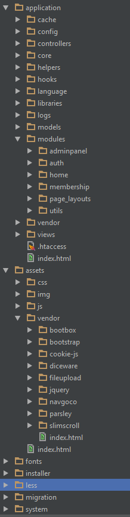

CIMembership Official Documentation
About
CIMembership is a CodeIgniter based login and backend application to use as a starter kit for new projects. The login and registration system is completely taken care of: members can get authorization rapidly with social networks like Facebook and Google or create their own account manually.
The development is ongoing and improving. New features will continue to be added to the core application as well as new modules that will be developed for this product.
Getting Support
You can contact me personally through my CodeCanyon profile. There is a form at the bottom right called "Email rakinjakk". I will get back to you asap!
Features
* System
- PHP>=5.6
- MySQL (5.1+)
- HMVC modular design - classic MVC is still available
- Works with the lastest version of CodeIgniter
- Installer and migration wizard
- XSS and CSRF protected
* Membership
- Registration form
- Two-factor Authorization
- Social login and registration with The PHPLeague's excellent OAuth libraries
- Email verification
- Remember login based on cookies
- Login from multiple IP addresses simultaneously
- Private member page with configurable options
- Profile image
- Optional login with email address
- Modern and complex password generation
- Resend avtivation
- Renew password
- Retrieve username
- Client-side validation with Parsley
- Google ReCaptcha 2 (version 1 also available)
* Backend
- Dashboard
- Many site settings
- Session clearing option
- Full user management system
- Contact member option
- OAuth provider setup
- ACL: unlimited roles and permissions (RBAC)
- Export members and database
- Multilevel and collapsable sidemenu
* Theming
- Powerful templating library
- Bootstrap based design built from scratch
- Fully responsive design
- Pre-built layouts: fixed header, boxed layout, fluid layout, ltr and rtl
Application Structure

Places of interest:
- application/modules where the PHP code resides for this application and where new code can be added.
- application/views where new themes can be born.
- assets to keep track of all your minified or development css and vendor is great for keeping all JavaScript plugins in once place and easy to reuse.
- less for compiling which is explained in the manual here.
!!! PLEASE CHECK THE MANUAL FOR ALL INSTALL AND UPGRADE NEEDS
!!! MAKE A BACKUP OF YOUR CURRENT DATE BEFORE UPGRADING
Vendor plugins
- Wiredesignz HMVC
- Bootbox
- Bootstrap
- Cookie-js
- Diceware
- jQuery File Upload
- HTML Purifier
- jQuery 2.2.4
- Navgoco menu (modified version)
- Parsley.js
- Slimscroll
- TinyMCE
Changelog for CIMembership version 3.2.1
Note: as the system becomes more and more complex it is inevitable that new bugs arise. It was time for another big bugfixing round, this version takes care of many open issues.
- UPDATED to CodeIgniter 3.1.3
- UPDATED to Font Awesome 4.7.0 and moved fonts to assets folder
- UPDATED jQuery File Upload
- UPDATED cookie-js
- UPDATED Parsley.js to version 2.7.0
- BUGFIX language in site settings, improving explanation here and there
- BUGFIX new notransition js class was not used in templates
- BUGFIX menu item backup & export
- BUGFIX social login would not remember cookie correctly resulting in incorrect logout. It was experimental and is now corrected and fully implemented (social login now acts like Facebook, always renewing cookie in the background).
- BUGFIX installer did not create user_cookie_part entry in database, causing issues with resetting passwords before logging in the first time when installation didnt complete for some reason.
- BUGFIX fixed DB password required in installer - not required anymore.
- BUGFIX installer failed to add DB setting data in some cases on WAMP.
- BUGFIX registration disabled message was not present in new language file for auth module resulting in an empty red box when registration was actually disabled
- BUGFIX profile image size was still hardcoded app.js - now using the setting 'picture_max_upload_size' from database
- BUGFIX fixed remember me at login, was broken because of the new login system (simultaneous logins from different IPs caused it to break)
- BUGFIX root admin account roles could be edited in member_detail resulting in an unpleasant no access error, effectively locking the admin account out.
- BUGFIX emailing backups was broken because of new usage of md5(uniqid()) to save files
- BUGFIX Site_Controller::$page did not work when page not found, effectively breaking the page not found page.
- BUGFIX Parsley button loading texts didn't work on pages where more than one form using the js-parlsey class was used.
- BUGFIX do not allow enabling of recaptcha without keys
- BUGFIX no access page load layout error
- IMPROVED Theming by adding a few protected variables that can be used to pre-define theming options for inheriting classes (look at Admin_controller.php for an example)
- IMPROVED adminpanel controllers with some missing translations
- IMPROVED removed commented code from login view - logging in with both username or email are fully tested and working
- IMPROVED cookies model query was simplified (related to bugfix)
- IMPROVED session processing with better helper and all login systems now use the same model (managing session data is much simpler now)
- IMPROVED list_members_action view was moved to adminpanel module views folder (from theme partials folder)
- IMPROVED removed z-index from .content in core.less line 390 as it could interfere with some Bootstrap modals
- IMPROVED uploading and saving of profile images: new library created that can be reused (currently used in profile and member_detail) so no more duplicate code.
- IMPROVED list_members with root admin star icon
- IMPROVED ban and deactivate: session data is now killed based on user ip address and user id, making sure they are logged out from the system after getting banned or deactivated.
- IMPROVED login error message for username or email to "That username or email could not be found."
- IMPROVED language files
- IMPROVED dashboard a bit (more in next version)
- IMPROVED roles usage and error messages; deleting administrator role/permissions has been made impossible again like it was before (design decision)
- IMPROVED product title in header is hardcoded now as large titles would break the design. The title field in site settings is for SEO purposes in the first place.
- IMPROVED installer with autocomplete="off" on username and email fields
- IMPROVED site settings SMTP password input field is now of type password
- IMPROVED login and social login controllers, simplified models and session creation
- IMPROVED adminpanel, auth and membership modules by adding their own config/routes.php file with a default controller defined. Changing the default controller
in application/config/routes.php now has no more impact on these modules.
- REMOVED old Windows oauth library - using Microsoft.php now.
- REMOVED old tooltip leftovers from profile and member_detail views
- REMOVED old header-rtl file (using header_rtl partial)
- REMOVED utils/models/Set_cookies_model as Private_Controller is now using the login model
- ADDED extra class on HTML tag in theme files. Can come in handy for styles that are specific to one page.
- ADDED dropzone to profile image upload
- ADDED New header dropdown for profile on top right navbar
Changelog for CIMembership version 3.2.0
This is a mayor update: many things have improved!
- BUGFIX when setting the membership home page as default page a redirect loop occurred
- BUGFIX in remember me query
- BUGFIX social login issues due to oauth update (see below (no more unreliable flashdata, now passing data with hidden input fields)
- BUGFIX list members search wrong redirect on form errors
- BUGFIX when minimizing menu in rtl design the top menu items shifted to the left
- BUGFIX logout button on menu was visible during accordion menu transitions on fixed designs
- BUGFIX favicons on public layout
- BUGFIX the sometimes buggy permission administration page (some error messages were missing because of transactions)
- BUGFIX clicking the checkbox in list members didn't work anymore.
- UPDATED to CodeIgniter 3.1.2
- UPDATED OAuth library from ThePHPLeague
- UPDATED Gargron upload code
- UPDATED jquery.file-upload.js
- UPDATED jQuery to 2.2.4
- UPDATED to Bootstrap 3.3.7
- UPDATED manual
- ADDED missing translations for list_members_action and send_message
- ADDED profile pic manipulation to adminpanel member detail
- ADDED login now possible with email address (new option in site settings)
- ADDED new helper for session setup at login
- IMPROVED password algorithm now using built-in methods from PHP>=5.5
- IMPROVED security on image upload with better CSRF protection
- IMPROVED language entries - now split up for each module where needed
- IMPROVED Parsley JS on forms
- IMPROVED installer, .htaccess doesn't need rewrite rule anymore; server requirements are now visible
- IMPROVED profile page layout
- IMPROVED default profile image name called "profile" as it is now set in a private class variable (might go to site settings later)
- IMPROVED the upload picture maximum file size which is now saved as a setting in the database
- IMPROVED the login cookies storage which is now based on IP address and stored in a separate table
- IMPROVED references in database: removing a parent now cascades through other tables to remove children. Affected tables: user_role, user_cookie_part, role_permission
- IMPROVED roles: admin roles can be saved now (admin still can't be deleted though)
- IMPROVED setting database table: now a setting for each row in stead of one row for all settings
- IMPROVED cosmetics here and there, small visual mistakes that were encountered by the community
- IMPROVED usernames can now be 24 characters long and passwords can get up to 255
- IMPROVED checks for when the site is disabled: the Private_Controller now checks and redirects accordingly. No more code needed elsewhere.
- MOVED DB_PREFIX constant from constants.php to database.php, accommodating the improved installer
- MOVED cim version to table setting
- RENAMED users table to user for complete naming conventions conformity
- REMOVED deprecated native autoload from config
- REMOVED password requirement for profile change because social login users don't have a password
- REMOVED narrow CSS margins for .row and .col-* inside .content because it was too narrow
- REMOVED session variable "logged_in" as its job can be done by "user_id"
- REMOVED deprecated oauth2_helper
- REMOVED constants ADMINISTRATOR from constants.php - replaced with database setting called root_admin_username.
- REMOVED utils/Intall
- DROPPED support for IE8